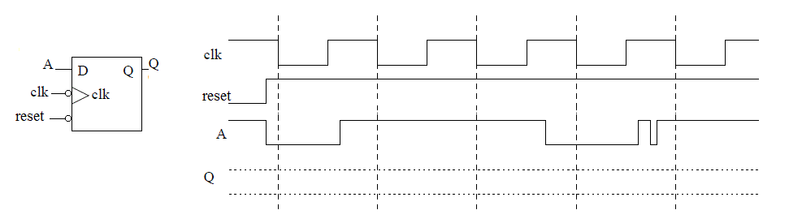
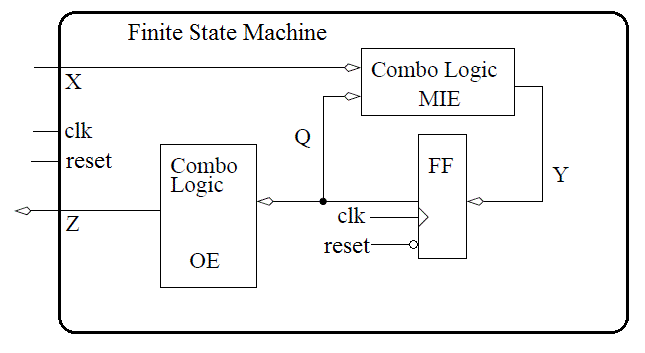
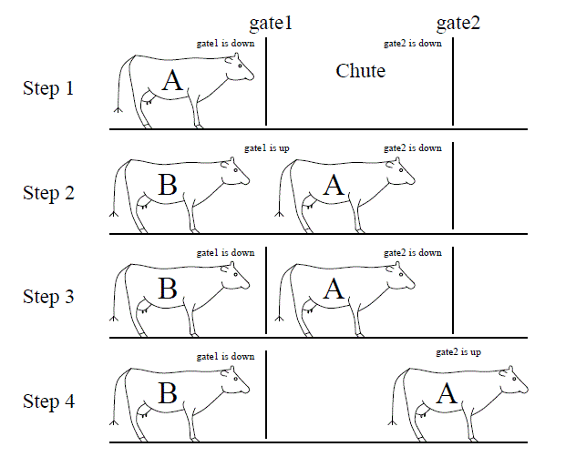
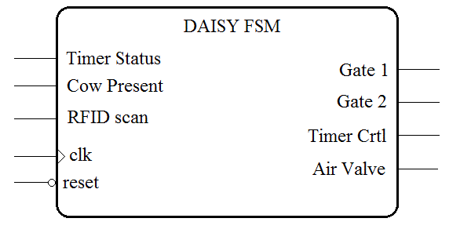
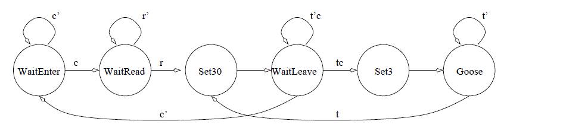
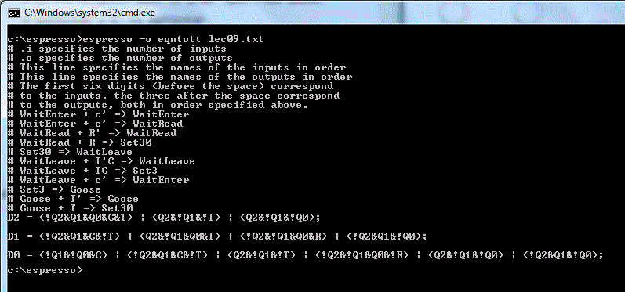
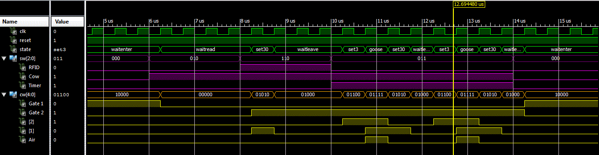

| Date: | February 2 |
| Lecture: | 9 |
| Homework | HW #6 |
| Status | Not Started |
| Handout | hand09.docx |
| Code | lec09.vhdl lec09_tb.vhdl lec09.wcfg |
The D flip flop
Since D flip flops will be a major part of this lecture, its worth spending a few minutes reviewing their operation. So complete the following timeing diagram for the output of the negative-edge triggered D flip flop with an asynchronous active low reset line.
Setup time, denoted Tsu, is the amount of time before the rising edge of the clock when the data inputs must be stable. Hold time, denoted Th, is the amount of time after the rising edge of the clock when the data input must be stable. Finally, propagation delay, denoted Tp, is the amount of time after the rising edge of the clock required for the new Q value to become valid.
Finite State Machines
A finite state machine (FSM) is the most general form of a sequential circuit, a circuit whose output is a function of the input and an internal state. In terms of the Figure below, this statement is reinterpreted as
Each of the signals X, Y,Q,Z is a vector, consisting of zero or more bits. The X signal is the input to the FSM from the system being controlled - also referred to as the status of the system. The Z signal is the output from the FSM to the system being controlled - also referred to as the control to the system. The combinational logic circuit generating Z is called the output equations (OE). The state of the FSM is carried on the Q lines. Each bit of Q is the output of a D flip flop. Thus, if Q is six bits wide, then the FSM has six D flip flops. The Y signals are called the memory inputs; they are the data inputs to the D flip flops. The combinational logic circuit generating the Y signals is called the memory input equations (MIEs). In order to improve the readability of circuit diagrams, from now on, the clock signal will not be shown.
Lets take a moment to reinterpret the statement The output of a finite state machine is a function of the input and the internal state in terms of this figure. You should arrive at the assignment Z = F(Q), and Q+ = G(Q,X). While the output does not directly depend on the input, it does depend on the state, which in turn does depend on the input.
With respect to this Figure, the design of a FSM requires three questions be answered:
- What are the MIEs;
- what are the OEs; and
- how many D flip flops are required?
FSM Timing
The events occurring in the FSM are referenced to the clock input of the D flip flops inside the FSM. The timing diagram below lists events (numberd in circles) with respect to the clock signal being applied to the Figure above. The following list explains what happens at each of the points in time in the Figure below with respect to the circuit at the top of the page.- Event 1
- Since flip flops sample their inputs on the positive edge of the clock, this point is the beginning of the timing analysis.
- Event 2
- The propagation delay of the flip flops means a small delay occurs between the clock edge and the flip flop outputs, Q, becoming valid. This is the called the propagation delay of the flip flop and denoted T_ff in the diagram below.
- Event 3
- In order to maximize the clocking frequency of the FSM, the new inputs, X, to the FSM should be applied at the same moment that the flip flop outputs become valid.
- Event 4
- According to Figure above, changing Q and X causes the memory inputs to change (the Y signal above). The delay between the application of the new inputs to the MIE logic and Y becoming valid is the propagation delay of the combination logic, denoted Tcombo.
- Event 5 When the Y values are valid, a small delay occurs while the flip flops register their new inputs, denoted Tsu. After this setup time, the FSM is ready for another clock edge.

The DAISY system
Since you should have some familiarity with FSM from previous course work, we will jump right into a moderately complex example that will server as an important stepping-stone to an important concept covered in Lectures 10-13. Your task in this example is to design a high-tech cow-tracking system for a local dairy. The system is called the Dairy Automated Information SYstem, or DAISY for short.Word Statement Cows have a RFID tag attached to their collars. When the cow passes through the cattle chute on their way into the barn, a RFID reader reads the unique ID stored on the RFID tag and logs the cow into the barn. The RFID system outputs a single bit: a 1 means the system has read an RFID tag and has successfully checked a cow back into the barn; a 0 means the RFID system is either still processing a tag or is not currently reading a tag.
In order to ensure each cow is scanned, the flow of cows into the barn is controlled by two gates at either end of the chute. Each gate is controlled by a single bit. To lift a gate, this input must be held at logic 1; to lower a gate, the input must be held at a logic 0. The sequence of raising and lowering the gates in order to control the flow of cows is illustrated in Figure 8.8.

- Step 1
- Gate1 is lifted allowing cow A to enter the chute.
- Step 2
- The DAISY system has detected cow A is in the chute and closes gate1.
- Step 3
- The cow waits in the closed off chute until the RFID reader signals that it has read the tag and checked in cow A.
- Step 4
- Gate2 is raised allowing cow A to leave. If the cow takes more than 30 seconds to leave, then the cow is "goosed" by a three-second burst of compressed air. An air bust is repeated at 30-second intervals until the cow leaves the chute. At any time when the cow leaves the chute, Gate 2 is closed and the system transitions back to Step 1.

Inputs to DAISY
The word statement infers the existence of three inputs. The RFID scanner sends the DAISY system a single bit which indicates if the cow has been processed. A second input tells the DAISY system if a cow is in the chute. The final system input comes from a timer used to inform the DAISY system when 3 or 30 seconds have expired. We will give each of these inputs a single letter abbreviation (shown in the table below) to simplify construction of the state diagram describing the FSM.| RFID Scanner = r | Cow Present = c | Timer Status = t |
| 1 - Cow checked in | 1 - cow present | 1 - timer up |
| 0 - Cow not processed | 0 - no cow | 0 - timer running |
Outputs from DAISY
The word statement infers the existence of four, separate outputs. The gates in the DAISY system are controlled by a single bit each. Assume a logic 1 must be continuously applied to a gate in order to keep it raised. In order to give DAISY an accurate sense of time, the system is provided with a single timer with two bits of input and one bit of output. To use this timer, set the timer to either 3 or 30 seconds for a single clock cycle. Then, the control input commanding the timer to count down is continuously applied. The output of the timer will equal 0 until the set time limit has expired at which times its output will stay at 1 until a new time interval is set. When the electronic valve controlling the compressed air is open, air rushes out, goosing the cow.| Gate1 | Gate2 | Timer Control | Air Valve |
| 1-gate up | 1-gate up | 00 Stop timer | 0 closed |
| 0-gate down | 0-gate down | 01 Set to 30 secs | 1 open |
| 10 Set to 3 secs | |||
| 11 Run timer |
State Diagram
The process of creating the state diagram for the DAISY system requires considering movement through the steps of the process required to get a single cow through the gated chute. Each step in this process then becomes a state or a set of states. Each state asserts some output to control the devices connected to the DAISY system. Below is one possible list; other arrangements are possible.- Open gate1
- Wait for cow to enter chute
- Close gate1
- Wait for RFID to read cow
- Open gate2
- Wait for cow to leave
- If 30 seconds has transpired, then goose cow; goto Step 6
- Else if the cow has left, then close gate2; goto Step 1

Memory Input equations
Remember from the first figure that the memory input equations are a function of both the current state and the input. The memory input equations depend on the state encoding - what binary code is assigned to each state. We will look at two dense and one's hot.Dense If you elect to use a dense encoding, you are trying to given each state a binary representation that minimizes the number of flip- flops. While on the surface this seems the most logical course, we will see that it in fact creates a number of difficulties. For the sake of an example, lets use the state encoding given in the table below.
| State | Code |
| WaitEnter | 000 |
| WaitRead | 001 |
| Set30 | 010 |
| WaitLeave | 011 |
| Set3 | 100 |
| Goose | 101 |
Input File to espresso
.i 6 # .i specifies the number of inputs .o 3 # .o specifies the number of outputs .ilb Q2 Q1 Q0 R C T # This line specifies the names of the inputs in order .ob D2 D1 D0 # This line specifies the names of the outputs in order # The first six digits (before the space) correspond # to the inputs, the three after the space correspond # to the outputs, both in order specified above. 000 -0- 000 # WaitEnter + c' => WaitEnter 000 -1- 001 # WaitEnter + c' => WaitRead 001 0-- 001 # WaitRead + R' => WaitRead 001 1-- 010 # WaitRead + R => Set30 010 --- 011 # Set30 => WaitLeave 011 -10 011 # WaitLeave + T'C => WaitLeave 011 -11 100 # WaitLeave + TC => Set3 011 -0- 000 # WaitLeave + c' => WaitEnter 100 --- 101 # Set3 => Goose 101 --0 101 # Goose + T' => Goose 101 --1 010 # Goose + T => Set30 .e # Signifies the end of the file.Output

This level of work to derrive the MIEs takes a lot of time and any changes mean that we will have to redo all this work. Frankly, this is just too much of a pain. Lets compare this against a different encoding called one's hot.
One's Hot A one's hot encoding requires an individual flip flop for each state. So in our case, we will have 6 flip flops. Each state is assigned a flip flop, which outputs 1 when the FSM is in that state. Thus the term "one's hot" means that only one of the flip flops will be hot (output of logic 1) at a time. The table below is a one's hot encoding for our state diagram.
| State | Code |
| WaitEnter | 000001 |
| WaitRead | 000010 |
| Set30 | 000100 |
| WaitLeave | 001000 |
| Set3 | 010000 |
| Goose | 100000 |
D_WaitEnter = Q_WaitEnter * c' + Q_WaitLeave * c D_WaitRead = Q_WaitRead * r' + Q_WaitEnter * c D_Set30 = Q_WaitRead * r D_WaitLeave = Q_Set30 + Q_WaitLeave * t' * c D_Set3 = Q_WaitLeave * t * c D_Goose = Q_Goose * t' + Q_Set3
Output Equations
The first step in generating the output equations is to build a control word table - a table listing, for each state, its output.| State | Gate1 | Gate2 | Timer | Control Air |
| 1-gate up | 1-gate up | 00 Stop timer | 0 - closed | |
| 0-gate down | 0-gate down | 01 Set to 30 secs | 1 - open | |
| 10 Set to 3 secs | ||||
| 11 Run timer | ||||
| WaitEnter | 1 | 0 | 00 | 0 |
| WaitRead | 0 | 0 | 00 | 0 |
| Set30 | 0 | 1 | 01 | 0 |
| WaitLeave | 0 | 1 | 00 | 0 |
| Set3 | 0 | 1 | 10 | 0 |
| Goose | 0 | 1 | 11 | 1 |
Z_Gate1 <= Q_WaitEnter; Z_Gate2 <= Q_Set30 + Q_WaitLeave + Q_Set3 + Q_Goose Z_Timer_1 <= Q_Set3 + Q+Goose Z_Timer_0 <= Q_Set30 + Q_Goose Z_Air = Q_Goose
VHDL
